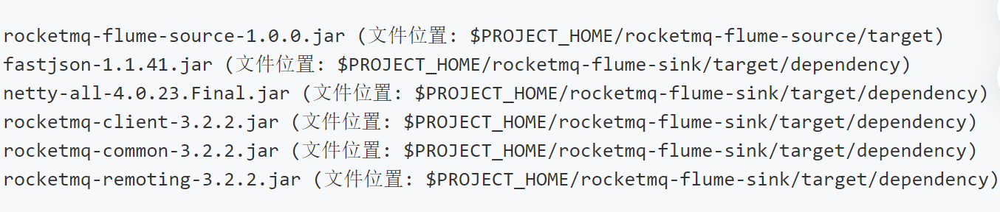

原文连接:https://www.cnblogs.com/wing1995/p/12053245.html
一、理论研究
1.1 总览
Flume是一个分布式的可靠的日志收集系统，主要是用于从各种数据源收集、聚合并移动大批量的日志数据到存储系统；它本身具有许多故障转移和恢复机制，具有强大的容错能力；它使用下面这样一个简单的可扩展的数据流模型来进行在线分析。

1.2 核心概念
Event：一个FLume事件是贯通整个Agent的基本的数据单元。Event从Source流到Channel再到Sink组件，主要是通过Event接口实现。一个Event包含一个字节数组（body）和一些可选的字符串表示的属性（headers）。
Agent：一个Agent就是一个独立的JVM进程。整个进程可以简单的描述为：Source从外部数据源消费特殊格式的Events，然后将这些事件存储到Channel中，Channel作为缓冲区会保存事件直到事件被Sink消费为止，当Sink消费到Channel中的事件，再将其从Channel中移除并将事件存放到外部的数据仓库比如hdfs或者下一个数据量的Source中。
1.3 可靠性
单跳可靠性：存储在Channel中的事件只有当它被存储在下一个Agent的Channel或者终端仓库中才会被Sink移除，这是Flume提供的一种end-to-end的数据流可靠性传输机制。
多跳可靠性：Flume通过使用这样一种事务的方法来保证Events的可靠性传输，主要是由Channel提供的事务里，封装了Source和Sink对Event进行有效的存储和恢复。上一个Agent中的Sink和当前Agent的Source将开启它们的事务方法来保证数据安全的存储在当前Agent的Channel中，这是一种point-to-point的可靠性传输机制。
1.4 可恢复性
缓存在Channel中的事件将会管理数据的恢复。Flume支持持久化的File Channel，当Channel类型为File Channel时数据将持久化到本地文件系统，当然也有Memory Channel会简单的将数据存储在内存队列中，Momery Channel速度很快但是一旦Agent挂了，数据将不可恢复。
二、实验
2.1 环境准备
- centos、JDK1.8、maven3;
- 从git下载源码后实验mvn编译或者直接cdh界面安装flume；
- 足够的日志空间和内存以及数据写入权限；
- 配置好flume的环境变量后，命令行输入flume-ng version查看版本验证安装是否成功。
2.2 实验案例
flume的根目录下的conf文件夹中的flume-conf.properties.template文件时一个配置文件的模板，该文件对Agent进行了详细的配置。一个或多个Agent的配置可以写在一个配置文件中，配置主要包括Agent中的每一个source、sink和Channel的属性以及这些组件是如何连在一起并组成数据流模型的。在Flume的实验中，我们主要通过配置文件来建立Flume模型，并通过bin/flume-ng来启动Flume的Agent。flume-ng命令需要指定agent的名称以及配置路径和配置文件名称，更多参数配置可以通过输入flume-ng help来了解。
实验一、本地tcp端口发送消息到flume，然后日志输出结果
首先，编写配置文件
# example.conf: A single-node Flume configuration
# Name the components on this agent
a1.sources = r1
a1.sinks = k1
a1.channels = c1
# Describe/configure the source
a1.sources.r1.type = netcat
a1.sources.r1.bind = localhost
a1.sources.r1.port = 44444
# Describe the sink
a1.sinks.k1.type = logger
# Use a channel which buffers events in memory
a1.channels.c1.type = memory
a1.channels.c1.capacity = 1000
a1.channels.c1.transactionCapacity = 100
# Bind the source and sink to the channel
a1.sources.r1.channels = c1
a1.sinks.k1.channel = c1以上配置定义了一个叫a1的单节点agent，a1拥有一个从端口44444监听数据的source，一个将数据缓存到内存的channel以及将日志数据输出到日志窗口的sink组件。当然一个配置文件中可以包含多个agent的配置，因此在启动flume-ng的时候需要指定agent的名称。启动命令类似于下面这种：
$ bin/flume-ng agent --conf conf --conf-file example.conf --name a1 -Dflume.root.logger=INFO,console以上命令中，在参数conf中指定配置文件的路径比如flume目录下的配置文件夹conf，该路径下包含flume-env.sh和log4j.propertites（该文件中默认配置了日志输出原始数据以及配置数据：-Dorg.apache.flume.log.printconfig=true -Dorg.apache.flume.log.rawdata=true），这样agent可以在指定的环境下运行并且以日志格式将数据输出到界面。
然后，可以在通过netcat命令往本地端口44444写数据，并在flume的终端的日志信息中找到包含的事件。
实验二、oracle增量数据写入flume，结果写入到hdfs
前期准备：从https://github.com/keedio/flume-ng-sql-source获取源码使用命令mvn package编译flume对接sql的源码成jar包并将jar包放在flume主目录下的lib文件夹中，注意以下说明中的版本对应。
配置编写：
# example.conf: A single-node Flume configuration
# Name the components on this a2
a2.sources = r2
a2.sinks = k2
a2.channels = c2
# For each one of the sources, the type is defined
a2.sources.r2.type = org.keedio.flume.source.SQLSoure
a2.sources.r2.hibernate.connection.url = jdbc:oracle:thin:@ip:port/sid
a2.sources.r2.hibernate.connection.user = username
a2.sources.r2.hibernate.connection.password = passwd
a2.sources.r2.hibernate.connection.autocommit = true
a2.sources.r2.hibernate.dialect = org.hibernate.dialect.Oracle10gDialect
a2.sources.r2.hibernate.connection.driver_class = oracle.jdbc.driver.OracleDriver
# Query delay, each configured milisecond the query will be sent
a2.sources.r2.run.query.delay=10000
# Status file is used to save last readed row
a2.sources.r2.status.file.path = /var/log/flume
a2.sources.r2.status.file.name = r2.status
# Custom query
a2.sources.r2.start.from = 197001010
a2.sources.r2.custom.query = SELECT emplid,effdt from sys.test where emplid>'$@$'
# Standard Query
# a2.sources.r2.table = sys.test
# a2.sources.r2.columns.to.select = emplid,effdt
a2.sources.r2.batch.size = 1000
a2.sources.r2.max.rows = 1000
a2.sources.r2.hibernate.connection.provider_class = org.hibernate.connection.C3P0ConnectionProvider
a2.sources.r2.hibernate.c3p0.min_size = 1
a2.sources.r2.hibernate.c3p0.max_size = 10
#sink's type must be defined
a2.sinks.k2.type = hdfs
a2.sinks.k2.hdfs.path = /flume/oracle
a2.sinks.k2.hdfs.fileType = DataStream
a2.sinks.k2.hdfs.writeFormat = Text
a2.sinks.k2.hdfs.rollSize = 1024000000
a2.sinks.k2.hdfs.rollInterval = 0
a2.sinks.k2.hdfs.rollCount = 0
# The channel can be defined as follows.
a2.channels.c2.type = memory
a2.channels.c2.capacity = 10000
a2.channels.c2.transactionCapacity = 1000
# connected source and sink with channel
a2.sources.r2.channels = c2
a2.sinks.k2.channel = c2
注意事项：start.from配置的是查询的增量字段对应的起始数据（增量字段默认为查询语句的第一个列名称），如果使用custom.query的查询语句不在where语句中使用'$@$'对增量字段进行过滤，将会导致数据会重复写入，每隔run.querry.delay的时间间隔将会运行一次会执行一次查询语句，并将数据读入到channel中，然后更新status文件中的lastIndex即'$@$'，该索引作为下一次执行查询时的开始字段的索引起始位置，大于改索引的所有记录将会输入到channel，建议直接使用standard Query来给通过columns.to.select配置列，以及table指定查询的表，这两个配置项配置了将会在后台执行SELECT <columns.to.select> FROM <table>，并且从初始化的数据开始自动执行增量查询。
实验三、avro发送文件到flume,结果写入到rocket mq
准备：源码见https://gitee.com/mxb/rocketmq-flume，将rocketmq相关的包和该源码编译的包全部打包在一起放进lib文件夹下，具体包如下图：

配置：
agent1.sources=source1
agent1.channels=channel1
agent1.sinks=sink1
agent1.sources.source1.type=avro
agent1.sources.source1.bind=0.0.0.0
agent1.sources.source1.port=15151
agent1.sources.source1.channels=channel1
agent1.sinks.sink1.type=com.handu.flume.sink.rocketmq.RocketMQSink
agent1.sinks.sink1.namesrvAddr=rocketmq_namesrv:9876
agent1.sinks.sink1.producerGroup=MyProducerGroup_1
agent1.sinks.sink1.topic=FromFlume
agent1.sinks.sink1.tag=Tag1
agent1.sinks.sink1.channel=channel1
agent1.channels.channel1.type=memory
agent1.channels.channel1.capacity=100
agent1.channels.channel1.transactionCapacity=100
agent1.channels.channel1.keep-alive=3
avro发消息：
$FLUME_HOME/bin/flume-ng avro-client -H localhost -p 15151 -F $FLUME_HOME/README
编写一个mq的consumer的进程接收消息,输出对应TOPIC下的的消息body中将会包含README的内容。